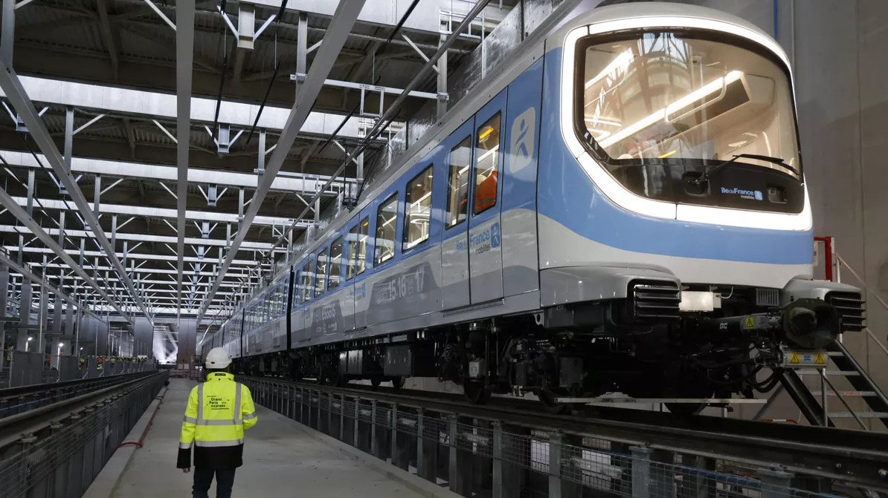
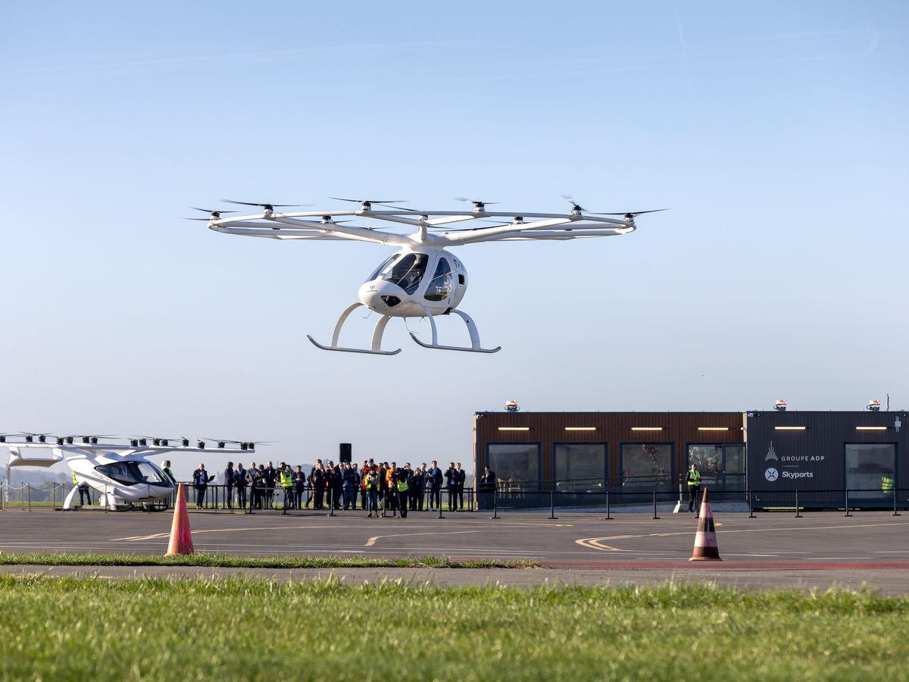
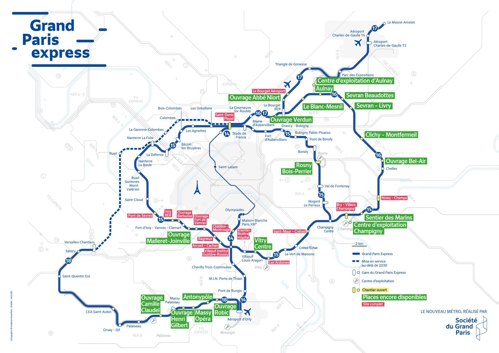

Courrier Olympique

Pour répondre à l’augmentation du flux de voyageurs sur les différentes lignes par rapport à un été normal, la ville de Paris et la région Île de France ont annoncé un grand projet à 22,6 milliards d’euros : le Grand Paris.
DEBUNKAGE
Concernant les prix : 22,6 milliards d’euros étaient initialement prévus mais pour parvenir à organiser des Jeux Olympiques français dès l'été prochain, il faudra mettre des moyens conséquents sur la table au total : une enveloppe de 8,2 milliards d'euros sera nécessaire en plus.
En effet, les transports en commun sont un support économique et démographique majeur dans la région. Ils accueillent tous les jours, et à toutes les heures, des voyageurs pour qui les transports en commun sont devenus un moyen de transport plus facile et moins dangereux que la voiture. Il faut également se souvenir qu’en développant davantage le réseau de transports de Paris et de sa banlieue, la ville ne fait pas un investissement uniquement pour l’été 2024, mais aussi pour toutes les années à venir. En effet, disposant déjà d’un dense un réseau de transports effectif à disposition des Parisiens intra et extra muros tels que les lignes de métro, de RER, ces derniers vont se renouveler et s’améliorer afin que tous les transports en commun soient neufs et parfaitement mis à disposition durant les Jeux Olympiques de cet été. En permettant à plus de touristes et résidents de la ville de se déplacer par transport, la ville de Paris pourra minimiser ses émissions de CO2 tout au long de l’évènement.

La RATP affirme que lors des Jeux, « les lignes 8, 9, 10, 13 et 14 seront renforcées ainsi que la ligne B. Cela nécessitera des flux de sécurité plus importants à Saint Denis Pleyel, Paris Ouest, au Stade de France… 90 gares et stations seront renforcées (Auber, Châtelet, Porte de Saint-Cloud…) pour répondre aux flux plus importants aux abords des sites olympiques »; En effet, afin d’éviter les afflux de véhicules sur les grandes voies de la région, le périphérique et les rues de la ville, l'offre de transport sera renforcée de 15 %, concentrée dans le cœur d'agglomération et sera maximale pour les lignes desservant des sites olympiques comme les RER B et D, la ligne T11 et la ligne 14, ainsi que renforcées par des navettes bus pour certains sites.
DEBUNKAGE
Les travaux ne sont pas terminés (actuellement, 84 % des travaux des Jeux Olympiques de Paris 2024 sont achevés), et il faut dire que dans sa candidature, la France avait fait preuve de beaucoup d'optimisme. Les porteurs du projet "Paris 2024" promettaient, au départ, une liaison expresse entre Paris et l'aéroport Charles-de-Gaulle dès 2024. Aujourd'hui, elle n'est pas attendue avant 2027. D'autres idées ont depuis été rejetées. De nouvelles lignes de métro devraient augmenter la capacité de déplacement d'ici à 2024. Les porteurs de la candidature annonçaient aussi un accès gratuit à l'ensemble du réseau pour les détenteurs de billets. Cependant ,trop coûteuses, les promesses ont été abandonnées. Pour les RER B et D et la ligne de métro 14 par exemple seront fermées pour cause de travaux tout au long de l’année. À nouveau, un autre sujet est évoqué : l'accessibilité des transports en commun pour les personnes en situation de handicap. Moins de 10% des stations sont accessibles aux personnes en fauteuil roulant, selon des chiffres datant d'août 2023. De même sur les chantiers, la Solideo a dénombré 168 accidents de chantiers, dont 26 graves et un avec des séquelles irréversibles.
Encore mieux, la ville innove et investit dans des taxis hélicoptères électriques qui permettront à quiconque de se déplacer librement dans les airs, appréciant la vue sur la capitale et sa périphérie ainsi que la réduction d’émissions de gaz à effets de serre. L'objectif du Comité d'organisation des Jeux olympiques et paralympiques de Paris 2024 est de permettre à 100 % des spectateurs de rejoindre les sites olympiques et paralympiques en transports collectifs. Les visiteurs et spectateurs des Jeux pourront ainsi se rendre de leur lieu d’hébergement à n’importe quel stade sans avoir à prendre une voiture. De ce fait, il sera aisé pour tous de se déplacer d’un lieu de Paris à l’autre sans voiture de location ni permis de conduire. De même, afin que les athlètes et toutes personnes accréditées puissent se déplacer sereinement, 150 lignes de transport seront mises spécialement en place et emprunteront les voies réservées olympiques : 185 km de voies destinées à sécuriser et fluidifier les flux leur seront réservées ainsi qu’aux secours et aux véhicules de la RATP.
DEBUNKAGE
Il y a également une polémique car l’état demande à la SNCF de financer en partie les travaux des lignes : en réponse, cette dernière a annoncé qu'elle renonçait à mener le chantier de rénovation de la gare du Nord. Les travaux, estimés à plus de 1,5 milliard d'euros, dépassant largement le budget prévisionnel envisagé fin 2020 de 500 millions d’euros.
« Cela correspond à un bus toutes les minutes qui partira du dépôt d’Aulnay-sous-Bois à la fin du petit-déjeuner du village olympique » détaille, le directeur délégué aux Jeux olympiques et paralympiques à la RATP, Edgar See.

À nouveau, afin de faciliter le voyage des spectateurs des Jeux dans les transports, plusieurs aides seront mises à la disposition de tous : premièrement, une application mobile, disponible au printemps 2024 facilitera les déplacements des spectateurs en proposant un calculateur d'itinéraires pouvant s'adapter aux aléas. En cas de problème au sein même du réseau de transports de la ville, 5 000 agents identifiables grâce à leurs chasubles violets seront déployés dans les gares et stations, où sera apposée une signalétique spéciale. À l’aide de ces deux moyens, durant l’événement, les visiteurs pourront plus facilement se familiariser avec les transports, ce qui permettra d’harmoniser les flux de voyageurs et d’éviter les encombres car, en effet, ce ne sont pas moins de 16 millions de visiteurs qui sont attendus pour l’été 2024.
DEBUNKAGE
Les innovations et dispositifs mis en place sont coûteux pour les citoyens : taxis hélicoptères sont estimés à 110€ en moyenne par trajet par Volocopter (entreprise allemande qui les a développés, associée à la RATP et aux Aéroports de Paris), les abonnements. Ajouté à ça l'augmentation des tarifs des tickets à l’unité (porté de 1,73 € à 4 €) pour “inciter les spectateurs à acheter un forfait jour à 13 €” et la création d’un passe créé spécialement pour les JO de Paris porté par Valérie Pécresse. La présidente de l’établissement public justifie la création du « pass Paris 2024 qui permettra aux visiteurs de se déplacer dans toute l’Île-de-France ». Il coûtera 16 euros par jour et donc 70 euros par semaine (pour comparaison aujourd’hui le forfait Navigo semaine est de 30 euros). De même, les voyageurs du quotidien seront impactés par une hausse du prix du ticket de métro, IDFM (Ile-de-France mobilités) devrait également augmenter le prix du ticket de train et de RER, il atteindra les 6 euros : en sept mots, les Jeux vont coûter cher aux Français.
Les transports de la ville de Paris deviendront donc un support pour tous les flux humains attendus, dans la ville et sa périphérie. À la rentrée, l’avantage sera laissé aux parisiens d’un réseau renouvelé, encore plus développé et avec des lignes de métro étendues aux banlieues. Le dynamisme de la ville sera alors maintenu par les transports en commun, et ce même après le départ du public des Jeux Olympiques et Paralympiques.
